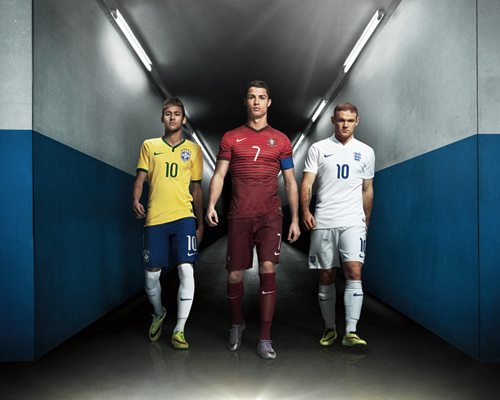
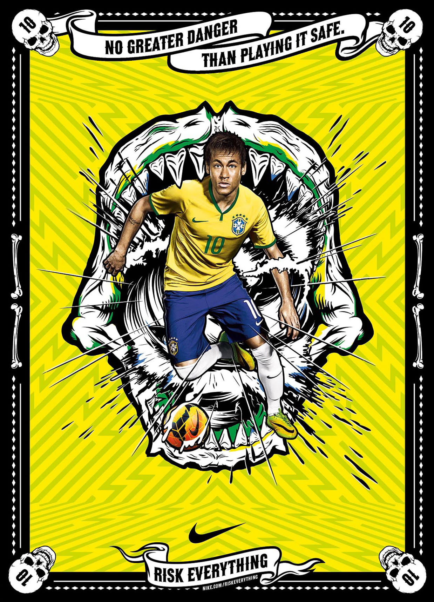
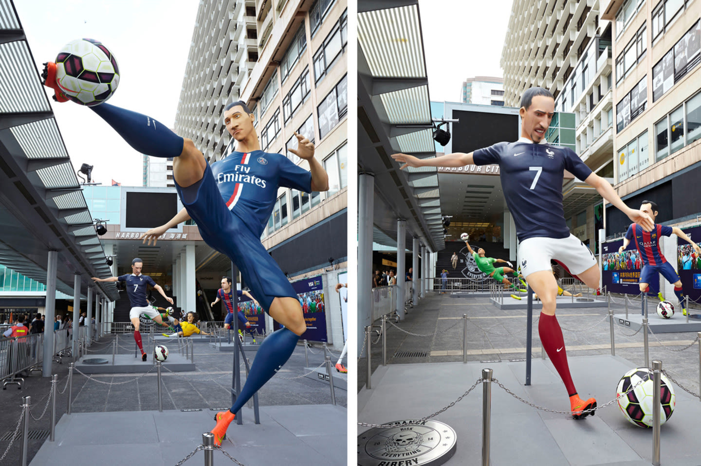

案例发生了什么



Nike 以“Risk Everything”反对安全、可预测的足球：从球星背负国家期待，到《Winner Stays》街头对决，再到五分钟动画《The Last Game》让真实球星反击只会执行“安全算法”的克隆人。
三部主片先后建立态度、球星世界和高潮；赛期把 Nike、W+K、合作机构与媒体伙伴集中在一个空间，连续 30 天、每天 24 小时、覆盖 22 种语言，实时制作 200 多条内容，并接入 ESPN、Xbox、Google、Facebook、微博等平台。W+K 项目页自报数字视频观看超过 4 亿、互动 2300 万。
营销启发卡
把历届经典的记忆点、商业结构和迁移方法放在同一层阅读。 卡片底部按主题连接全站相关案例、经典方法与深度文章。
核心动作
巨星压力、少年幻想和“宁可冒险也不要无聊”的竞技价值观；球星闯入实验室，夺回被克隆人变得“绝对安全”的足球。
传播与商业机制
品牌没有 FIFA 官方身份，便把“敢于冒险的足球”定义成自己的文化领地，让官方赛事成为故事背景而非唯一流量入口；三部主片先后建立态度、球星世界和高潮；赛期把 Nike、W+K、合作机构与媒体伙伴集中在一个空间，连续 30 天、每天 24 小时、覆盖 22 种语言，实时制作 200 多条内容，并接入 ESPN、Xbox、Google、Facebook、微博等平台。W+K 项目页自报数字视频观看超过 4 亿、互动 2300 万。
可复用的方法
没有官方身份时，内容不能只靠一支大片；需要预先搭好可连续扩写的世界观、实时编辑机制和平台分发协作。
适用条件、风险与证据
- 4 亿观看、2300 万互动及销售增长来自代理商项目页和 Nike 财季口径，适合作为项目自报结果，不等同于独立增量审计。
- 后续复盘还应补齐发布主体、时间线、真实执行图、媒介范围和结果口径；没有这些证据时，不把行业评价或赛事总热度写成品牌增量。
官方资料与原始来源
全球
非官方/球队与球星资源
非官方借势型；内容三部曲；实时编辑室；平台协同型
- Wieden+Kennedy · 2014-04Nike: Risk Everything · 项目与结果复盘
- designboom · 2014-04-02Risk Everything campaign overview
来源按品牌/官方发布、官方账号留存、权威媒体、获奖案例库分层记录；品牌与奖项自报结果不视作独立审计。